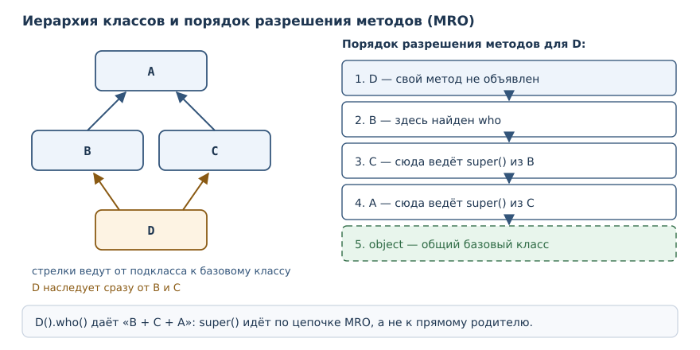
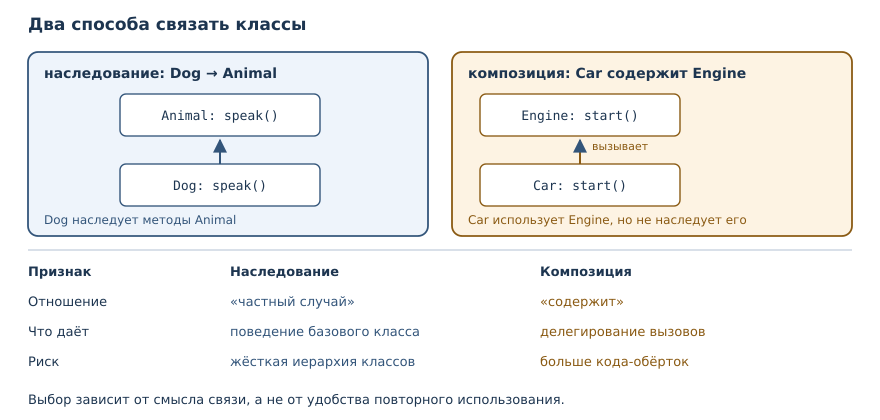

Наследование, полиморфизм и композиция
Повторное использование кода и подстановочность: базовые классы, переопределение, порядок разрешения методов и композиция.
В этой главе
До сих пор каждый класс стоял сам по себе. Но у разных сущностей часто совпадает поведение: у собаки и кошки есть имя и общий способ представиться, у квадрата и круга есть площадь. Копировать одинаковые методы в каждый класс плохо: исправление придётся повторять в нескольких местах, а забытое — превратится в дефект. В этой главе вы научитесь строить классы на основе существующих, подменять одни объекты другими через общий интерфейс и выбирать между наследованием и композицией.
27.1 Зачем это нужно
Представьте программу, которая считает суммарную площадь фигур. Если фигур две — квадрат и круг, — можно написать две функции и две ветви условия. С третьей фигурой появляется третья ветвь, и каждая новая фигура требует правки в нескольких местах. Ошибка в одной ветви не видна компилятору и проявляется только на конкретном наборе данных.
Полиморфизм убирает ветвления: функция просит у каждой фигуры её площадь и не интересуется, какого та типа. Новый класс подключается без правки этой функции. Наследование помогает описать общий контракт и переиспользовать готовое поведение, а композиция — собрать объект из других объектов, когда отношение «частный случай» не подходит.
Третья причина — единая точка изменения. Если у всех животных способ представиться устроен одинаково, его место в базовом классе, а не в каждом подклассе. Тогда исправление формата затрагивает одну строку.
27.2 Что вы сможете после этой главы
- описывать базовый класс и подклассы, переопределять методы;
- вызывать поведение базового класса через
super()и объяснять, зачем это нужно; - писать функции, которые работают с объектами разных классов через общий интерфейс;
- читать порядок разрешения методов и понимать, откуда взялся вызванный метод;
- отличать отношение «частный случай» от отношения «содержит» и выбирать подходящий инструмент;
- проверять типы функциями
isinstanceиissubclass, не превращая код в набор проверок.
27.3 Наследование: базовый класс и подкласс
Наследование — создание класса на основе другого с наследованием его поведения и возможностью расширения.
Базовый класс — класс, от которого наследует другой класс.
Подкласс — класс, наследующий поведение базового класса.
Синтаксис прост: имя базового класса указывают в скобках после имени нового. Подкласс получает унаследованные атрибуты и методы базового класса (с учётом порядка разрешения методов) и может добавить свои или заменить существующие.
class Animal:
def __init__(self, name):
self.name = name
def speak(self):
return "..."
def describe(self):
return f"{self.name}: {self.speak()}"
class Dog(Animal):
def speak(self):
return "гав"
class Cat(Animal):
def speak(self):
return "мяу"
for animal in (Dog("Рекс"), Cat("Мурка"), Animal("неизвестный")):
print(animal.describe())
Рекс: гав
Мурка: мяу
неизвестный: ...
Разберём, что произошло. Метод describe объявлен один раз в Animal и
вызывает self.speak(). Подклассы не повторяют describe: они получают его
по наследству. Но speak они переопределяют, поэтому в момент вызова
self.speak() выбирается метод фактического класса объекта, а не базового.
Именно на этом держится весь дальнейший механизм.
Наследование задаёт отношение «частный случай»: собака — животное, поэтому всё, что умеет животное, умеет и собака. Обратное неверно: не каждое животное — собака.
27.4 Переопределение и super()
Переопределение — замена метода базового класса одноимённым методом подкласса.
Заменить поведение целиком просто: достаточно объявить метод с тем же именем.
Чаще нужно не заменить, а дополнить. Для этого служит super() —
функция, дающая доступ к методам базового класса из переопределённого метода.
class Animal:
def __init__(self, name):
self.name = name
class Dog(Animal):
def __init__(self, name, breed):
super().__init__(name)
self.breed = breed
d = Dog("Рекс", "лабрадор")
print(d.name, d.breed)
print(isinstance(d, Dog), isinstance(d, Animal))
print(issubclass(Dog, Animal))
Рекс лабрадор
True True
True
Конструктор подкласса обязан позаботиться о состоянии базового класса.
Вызов super().__init__(name) передаёт имя в родительский метод, который
записывает self.name. Затем подкласс добавляет своё поле breed. Такой
порядок — сначала база, потом расширение — стандартный.
Если забыть про super(), объект окажется «недоделанным»: часть состояния
базового класса не создана. Ошибка проявится не в конструкторе, а позже, при
обращении к отсутствующему атрибуту:
class Animal:
def __init__(self, name):
self.name = name
class Dog(Animal):
def __init__(self, name, breed):
self.breed = breed
d = Dog("Рекс", "лабрадор")
print(d.name)
AttributeError: 'Dog' object has no attribute 'name'
super() полезен и в обычных методах, когда нужно расширить поведение, а не
выбросить его:
class Logger:
def log(self, message):
return ["log: " + message]
class TimestampLogger(Logger):
def log(self, message):
records = super().log(message)
records.append("готово")
return records
print(TimestampLogger().log("старт"))
['log: старт', 'готово']
Подкласс получил результат базового метода и дополнил его. Если бы он
переписал log целиком, формат записи пришлось бы дублировать.
27.5 Полиморфизм
Полиморфизм — возможность работать с объектами разных классов через общий интерфейс, не проверяя их конкретный тип.
Посмотрите, как выглядит функция, которая считает суммарную площадь:
class Shape:
def area(self):
raise NotImplementedError
class Square(Shape):
def __init__(self, side):
self.side = side
def area(self):
return self.side ** 2
class Circle(Shape):
def __init__(self, radius):
self.radius = radius
def area(self):
return round(3.14159 * self.radius ** 2, 2)
def total_area(shapes):
return round(sum(shape.area() for shape in shapes), 2)
print(total_area([Square(2), Circle(1)]))
print(Square(2).area(), Circle(1).area())
7.14
4 3.14
Функция total_area не знает, какие именно фигуры ей передали: ей достаточно,
что у каждой есть метод area. Квадрат и круг здесь связаны общим базовым
классом Shape, но функция работает и без него — это показано ниже, в разделе
«Полиморфизм без общего базового класса». Для total_area важен не тип
объекта, а наличие метода area.
Базовый класс Shape здесь играет роль контракта: он объявляет area и
сообщает, что подкласс обязан её реализовать. Строка raise NotImplementedError
— обещание, что метод без реализации использовать нельзя. Формально Python
не требует общего базового класса: достаточно, чтобы метод существовал. Но
общий базовый класс делает контракт видимым и даёт общий тип для документации.
Добавление новой фигуры не требует правки total_area. Это главный признак
полиморфного решения: новый код подключается, а старый не меняется.
Полиморфизм без общего базового класса
Общий базовый класс помогает описать контракт, но не обязателен. Python
смотрит на поведение объекта, а не на его родословную: если у объекта есть
метод area, его можно передать в total_area.
class Square:
def __init__(self, side):
self.side = side
def area(self):
return self.side ** 2
class Circle:
def __init__(self, radius):
self.radius = radius
def area(self):
return round(3.14159 * self.radius ** 2, 2)
def total(shapes):
return round(sum(shape.area() for shape in shapes), 2)
print(total([Square(3), Circle(2)]))
21.57
Здесь у Square и Circle нет общего предка, и это не мешает функции.
Такой стиль называют утиной типизацией: «если это крякает как утка, то это
утка». У него есть цена: ошибка в имени метода обнаружится только при
вызове, а не при объявлении класса. Поэтому в больших программах общий
базовый класс или протокол (о них в главе 29) всё же полезен: он делает
контракт явным и позволяет проверить реализацию заранее.
27.6 Когда наследование уместно
Наследование — сильная связь. Подкласс зависит не только от имён методов базового класса, но и от их поведения: если база изменит смысл метода, подкласс может сломаться. Поэтому решение стоит принимать по трём вопросам.
Первый: верно ли отношение «частный случай»? Собака — животное, квадрат — фигура, наследование уместно. Автомобиль — не двигатель, отчёт — не логгер, здесь нужна композиция.
Второй: можно ли подставить подкласс вместо базового класса? Если
функция принимает Animal и вызывает speak, любой подкласс обязан
поддерживать этот вызов. Подкласс, который «почти подходит», но требует
особого обращения, ломает подстановочность и делает общий код хрупким.
Третий: не придётся ли отключать унаследованное поведение? Если подкласс вынужден переопределять половину методов пустыми телами или запрещать часть операций, иерархия выбрана неверно. Это сигнал, что общий базовый класс объединяет слишком разные сущности.
Хороший пример наследования — иерархия исключений: ValueError — подкласс
Exception, и код, который ловит Exception, корректно работает с любым
подклассом. Хороший пример композиции — класс отчёта, который пишет в
логгер: отчёт — не логгер, он им пользуется. В сомнительных случаях
начинайте с композиции: её проще заменить на наследование позже, чем
наоборот.
27.7 isinstance, issubclass и проверки типов
isinstance — встроенная функция, которая отвечает на вопрос,
принадлежит ли объект классу или его подклассу.
class Animal:
pass
class Dog(Animal):
pass
d = Dog()
print(isinstance(d, Dog), isinstance(d, Animal), type(d) is Dog, type(d) is Animal)
print(issubclass(Dog, Animal), issubclass(Animal, Dog))
True True True False
True False
isinstance учитывает наследование: собака — экземпляр и Dog, и Animal.
type наследование не учитывает и возвращает ровно класс объекта, поэтому
сравнение type(d) is Animal даёт False. issubclass проверяет сами классы.
Проверка типа уместна на границе программы: например, при разборе входных
данных или в отладочном утверждении. Внутри объектного кода она часто
признак того, что полиморфизм не использован: вместо if isinstance(...)
стоит объявить общий метод и вызвать его. Каждая проверка типа добавляет
ветвь, которую придётся править при появлении нового класса.
27.8 Порядок разрешения методов
Когда классов несколько, важно понимать, в каком порядке Python ищет метод. Порядок разрешения методов (MRO) — линейный порядок, в котором Python ищет метод в иерархии классов; при множественном наследовании он строится алгоритмом C3.
class A:
def who(self):
return "A"
class B(A):
def who(self):
return "B + " + super().who()
class C(A):
def who(self):
return "C + " + super().who()
class D(B, C):
pass
print(D().who())
print([cls.__name__ for cls in D.__mro__])
B + C + A
['D', 'B', 'C', 'A', 'object']
Класс D наследует от B и C, оба наследуют от A. Порядок поиска:
D, B, C, A, object. У D своего who нет, поэтому находится
метод B. Внутри него super().who() идёт дальше по цепочке и попадает в
C, а не в A — вот почему получилось B + C + A, а не B + A.
super() не «вызывает базовый класс» вообще, а вызывает следующий класс в
порядке разрешения методов.

Для одиночного наследования порядок очевиден: класс, его база, база базы.
Множественное наследование усложняет картину, и без необходимости его лучше
избегать: цепочка super() становится трудной для чтения. Если классы всё
же совмещают, помогает привычка смотреть на __mro__ и не полагаться на
догадки.
27.9 Композиция
Композиция — построение объекта из других объектов: «has-a» вместо «is-a».
Объект хранит другой объект в атрибуте и вызывает его методы. Отношение «содержит» не требует родства классов:
class Engine:
def __init__(self, power):
self.power = power
def start(self):
return f"двигатель {self.power} л.с. запущен"
class Car:
def __init__(self, model, engine):
self.model = model
self.engine = engine
def start(self):
return f"{self.model}: {self.engine.start()}"
car = Car("Седан", Engine(150))
print(car.start())
print(isinstance(car, Engine))
Седан: двигатель 150 л.с. запущен
False
Car — не двигатель, поэтому наследование здесь было бы ошибкой.
Машина содержит двигатель и делегирует ему работу: метод start автомобиля
вызывает start двигателя. Такая связь гибче: двигатель можно заменить на
другой, не меняя класс автомобиля.
Сравним два отношения:
| Признак | Наследование | Композиция |
|---|---|---|
| Отношение | «частный случай» | «содержит» |
| Что даёт | поведение базового класса | делегирование вызовов |
| Изменение | правка иерархии | замена вложенного объекта |
| Риск | жёсткая структура | больше кода-обёрток |

27.10 Наследование от встроенных классов: чего избегать
Соблазн велик: список уже умеет хранить элементы, значит, стек можно сделать
наследником list. Проблема в том, что наследник получает все методы
родителя, включая те, что нарушают правила нового класса:
class Stack(list):
def push(self, item):
self.append(item)
s = Stack()
s.push(1)
s.append(2)
s.insert(0, 99)
print(s)
[99, 1, 2]
Метод push добавлен, но append и insert остались доступны и позволяют
обойти правило «элементы добавляются только в конец». Композиция решает
задачу иначе: список хранится внутри и доступен только через нужные методы.
class Stack:
def __init__(self):
self._items = []
def push(self, item):
self._items.append(item)
def pop(self):
return self._items.pop()
def size(self):
return len(self._items)
s = Stack()
s.push("a")
s.push("b")
print(s.pop(), s.size())
print(hasattr(s, "append"))
b 1
False
Наружу видны только push, pop и size. Внутренний список скрыт за
соглашением об имени, поэтому случайно обойти инвариант снаружи нельзя.
Сознательно — можно: s._items.append(...) доступен, но это явное нарушение
соглашения, как и любое обращение к имени с подчёркиванием. Правило простое:
наследование от встроенных коллекций оправдано редко; чаще достаточно
композиции или модуля collections, о котором пойдёт речь в главе 34.
27.11 Типичные ошибки
- Забыть
super().__init__()в конструкторе подкласса. Состояние базового класса не создаётся, и ошибка всплывает позже. - Наследовать ради повторного использования кода, а не ради отношения
«частный случай». Класс
Car(Engine)формально переиспользует методы, но ломает смысл: автомобиль — не двигатель. - Считать, что
super()вызывает базовый класс. Он вызывает следующий класс в порядке разрешения методов, и при множественном наследовании это не обязательно прямой родитель. - Проверять типы вместо полиморфизма. Цепочка
isinstanceтребует правки при каждом новом классе и плохо читается. - Менять сигнатуру переопределённого метода. Если базовый метод принимает два аргумента, подкласс должен принимать их же: иначе вызов через общий интерфейс сломается.
- Строить глубокую иерархию «на будущее». Каждый уровень добавляет связь, которую потом трудно разорвать; начинайте с композиции.
27.12 Упражнения
1. Прогноз вывода
Определите, что напечатает программа, и объясните, откуда берётся каждый метод:
class Animal:
def __init__(self, name):
self.name = name
def speak(self):
return "..."
class Dog(Animal):
def speak(self):
return "гав"
print(Dog("Рекс").speak())
print(Animal("кто-то").speak())
print(Dog("Рекс").name)
2. Базовый класс и два подкласса
Объявите класс Vehicle с describe(), возвращающим строку
"<имя>: <скорость> км/ч". Сделайте подклассы Car (без изменений) и
Truck, который дополняет описание словом «грузовик». Проверьте оба.
3. Исправление конструктора
Программа падает с AttributeError, потому что подкласс не вызвал
конструктор базового класса. Найдите ошибку и исправьте:
class Animal:
def __init__(self, name):
self.name = name
class Dog(Animal):
def __init__(self, name, breed):
self.breed = breed
d = Dog("Рекс", "лабрадор")
print(d.name)
4. Расширение через super()
Объявите класс Logger с методом log(message), возвращающим список
["log: " + message]. Подкласс TimestampLogger должен вызвать базовый
метод, добавить в список строку "готово" и вернуть его. Проверьте вывод.
5. Полиморфная функция
Объявите классы Square и Circle с методом area() и функцию total,
которая принимает список объектов и возвращает суммарную площадь с
округлением до двух знаков. Проверьте на квадрате со стороной 3 и круге
радиуса 2.
6. isinstance против type
Для пары классов «животное — собака» выведите результаты проверок
isinstance(d, Animal), type(d) is Animal, issubclass(Dog, Animal) и
issubclass(Animal, Dog). Объясните разницу между функциями.
7. Порядок разрешения методов
Дана иерархия A ← B, A ← C, D(B, C), где каждый метод who добавляет
к результату префикс и вызывает super().who(). Предскажите результат
D().who() и выведите список имён классов из __mro__.
8. Композиция
Объявите класс Logger с методом write(message) и класс Report, который
содержит логгер и в методе build() пишет в него строку отчёта, возвращая
словарь с названием и списком строк. Проверьте, что Report — не
Logger.
9. Стек без наследования
Класс Stack унаследован от list и поэтому позволяет обходить правило
добавления. Перепишите его через композицию: внутренний список, методы
push, pop, size. Убедитесь, что append у нового класса отсутствует.
10. Мини-проект: расчёт зарплат
Объявите базовый класс Employee с именем и окладом и методом salary().
Подклассы: Manager с премией (оклад плюс премия) и Intern, получающий
половину оклада. Соберите список сотрудников разных классов, напечатайте
зарплату каждого и общую сумму. Объясните, почему функция подсчёта не
содержит проверок типа.
27.13 Проверка понимания
- Какое отношение описывает наследование, а какое — композиция?
- Что делает
super()и почему при множественном наследовании он может вызвать не прямой родительский класс? - Зачем базовому классу метод с
raise NotImplementedError? - Чем
isinstanceотличается отtype(d) is X? - Почему функция, работающая через общий интерфейс, лучше цепочки
isinstance? - Почему наследование от
listдля стека может нарушить инвариант?
27.14 Что дальше
Вы умеете строить иерархии и подменять объекты через общий интерфейс. Но
пока ваши классы не вписываются в синтаксис языка: print(point) печатает
адрес, а point1 == point2 сравнивает ссылки. В главе
«Модель данных: dunder-методы» вы научитесь встраивать свои
типы в операторы, сравнения и встроенные функции.